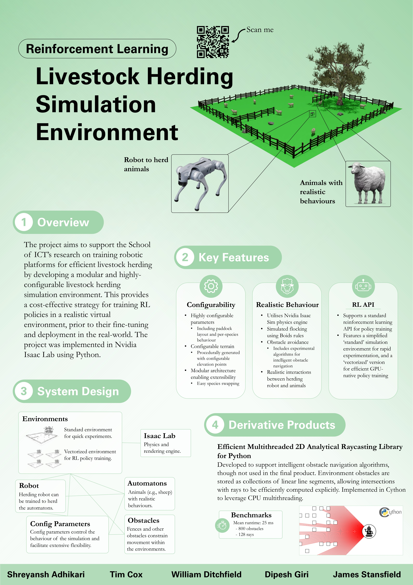

Livestock Herding Simulation Environment
UTAS BICT Capstone Project
The UTAS School of ICT is currently undertaking reinforcement learning research focussed on training robotic platforms for effecient livestock herding. This project aims to support the School's research through the development of a modular and highly-configurable livestock herding simulation environment, thus providing a cost-effective strategy for training RL policies in a realistic virtual environment, prior to their fine-tuning and deployment in the real-world. The simulation environment is designed to be highly configurable, supporting configurable species, environment parameters (e.g., size, terrain, and obstacles), and behavioural parameters. Automatons (e.g., sheep) within the environment support reactive navigation behaviours, including flocking and obstacle navigation using novel navigational algorithms designed by the team to realistically simulate the behaviour of animals in the real-world. The project is implemented in Isaac Lab (an industry standard and globally-recognised software package for robotics RL), and is written in a mixture of Python and Cython.
Developed by:
- Shreyansh Adhikari: sa79@utas.edu.au
- Tim Cox: tcox6@utas.edu.au
- William Ditchfield: wd1@utas.edu.au
- Dipesh Giri: girid@utas.edu.au
- James Stansfield: jamess38@utas.edu.au

Download a higher-quality version of the poster here: kit300_team7_poster.pdf.